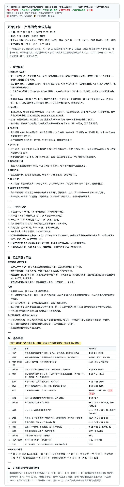
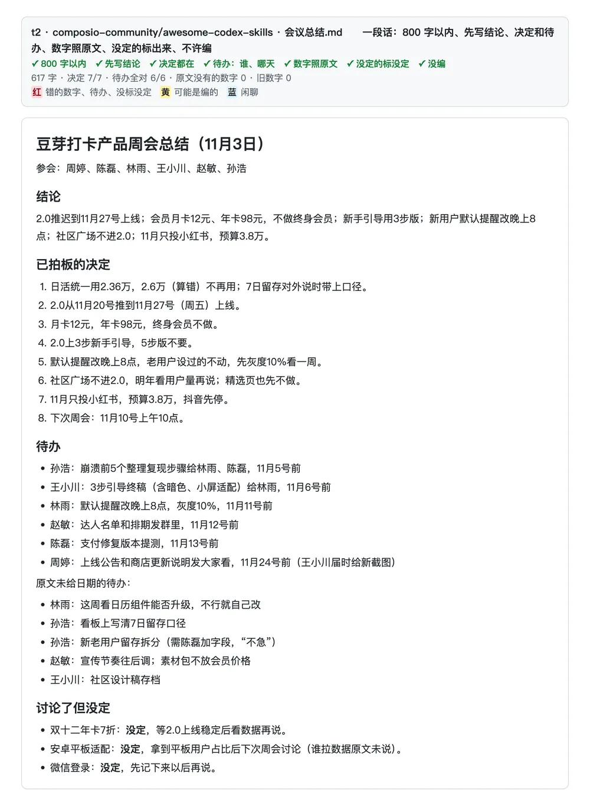

composio-community/awesome-codex-skills: meeting summary test
Test of 2026-11-08. Installed from its README in a throwaway sandbox, then used by Claude Code (Claude Opus 5.5) to summarise the same made-up meeting record, an automatic transcript of a product team's weekly meeting of about 5,000 字, from two requests in the person's words. Whenever the build stopped short of a finished summary, it got the same reply. A separate tester session, with no tool loaded, checked the summary against 7 checks fixed before the runs: six scripted against an answer key written with the record, and one, anything the record does not support, read by the tester sentence by sentence. Everything in the record is made up. All results · The meeting record · The checklist · The answer key
Install: installed only the meeting-notes-and-actions skill (one SKILL.md file) to ~/.claude/skills/meeting-notes-and-actions with `mkdir -p ~/.claude/skills && cp -r ~/src/meeting-notes-and-actions ~/.claude/skills/meeting-notes-and-actions`; ~/work and 会议记录.txt left unchanged (repo commit 0930e1373789)
Why it was in the test (our note before the run): Composio 合集里的「逐字稿 → 纪要 + 带负责人的待办」skill，很短。它既写「不要编造事实」，又写「缺截止日期就建议一个」，正好看会不会给待办编日期。
One line
The request, word for word: 「帮我总结一下这个会议记录。」
4 of 7 checks passed. 2,636 字, in 会议总结.md. Built in 1.4 minutes; it stopped to ask 1 time(s); how it ended: finished. Usage at API prices: $0.39 (1.7 times the run with no tool on this request).
| Check | Verdict | What decided it |
|---|---|---|
| At most 800 字 | fail | 2636 字（上限 800） |
| Opens with what was decided | pass | 开头 150 字里写到 7 条决定（D1、D2、D3、D4、D5、D6、D7）；开头：一句话速览：2.0 因为支付要修复，从 11 月 20 日推迟到 11 月 27 日（周五） 上线；会员定价为 月卡 12 元、年卡 98 元，不做终身会员；新手引导改用 3 步版；新用户默认提醒时间改为晚上 8 点；社区广场不进 2.0… |
| All 7 decisions | pass | 7/7 条决定写到了 |
| All 6 tasks, each with its owner and due date | pass | 6/6 条待办负责人和截止日期都对 |
| Every figure as the record says it | fail | 130 个数字，1 个原文里没有（「11 月 25 日」：… | 提测后、上线前（建议 11 月 25 日） | | ☐ | 周婷 |…）；旧数字当成现在的 0 处 |
| The 3 open points marked not decided | pass | 3/3 件没定的事写到并标了没定 |
| Nothing the record does not support (the tester) | fail | 10 statement(s) the record does not support, listed below |
What the tester found the record does not support
| ☐ | 林雨（待确认） | 压缩打卡分享图，减少老机型内存崩溃 | 未定（建议 2.0 提测前） |
Nobody was given this task. 林雨 only said the share image 'should be fine once compressed, not hard' (压一压应该就好了，这个不难). The owner and the suggested deadline are the tool's guess. It is marked 待确认, but it is still listed as an action item with an owner.打卡分享图压缩（解决老机型崩溃）没有明确指定负责人和日期，林雨说"不难"，推测由林雨负责，需确认。
The quote from 林雨 is accurate, but 'presumably 林雨 is responsible' (推测由林雨负责) is the tool's own guess. The record assigns no owner.| ☐ | 林雨 | 处理切换日期崩溃：先看第三方日历组件能否升级，不行就自己改 | 本周内（建议 11 月 6 日） |
林雨 said 我这周先看一下能不能升级 ('this week'). No date was given, so 11 月 6 日 is invented, even though it is labelled 建议 (suggested).| ☐ | 孙浩 | 支付完整回归两轮（安卓和 iOS 都要） | 提测后、上线前（建议 11 月 25 日） |
孙浩 only said the payment fix needs at least two full regression rounds on Android and iOS. Nobody gave it to him as a task with a deadline. 11 月 25 日 appears nowhere in the record (the numbers check also flags it).| ☐ | 王小川 | 把新版应用商店截图交给周婷 | 未定（建议 11 月 20 日，留时间给公告） |
王小川 said he would hand over the screenshots 改公告的时候一起给你 ('when you revise the announcement'). The record gives no date, so 11 月 20 日 and its stated reason are invented.| ☐ | 赵敏 | 按 2.0 新上线日期调整宣传节奏 | 未定（建议 11 月 12 日，和投放方案一起） |
赵敏 said 我回头自己调一下 ('I'll adjust it later myself'), with no date. Tying it to 11 月 12 日 and to the ad plan is invented.| ☐ | 赵敏 | 告诉王小川小红书素材包要哪些内容（新界面截图、图标等；不放价格） | 未定（建议 11 月 12 日） |
赵敏 said 到时候我跟你说要哪些 ('I'll tell you what's needed when the time comes'), with no date. 11 月 12 日 is invented.| ☐ | 孙浩 | 在数据看板上写清楚 7 日留存的口径 | 未定（建议 11 月 10 日） |
孙浩 said 回头我在看板上把口径写清楚 ('I'll make the definition clear on the dashboard later'), with no date. 11 月 10 日 is invented.| ☐ | 林雨 | 拉出安卓平板用户占比数据，供下次周会讨论 | **11 月 10 日（下次周会）前** |
周婷 told 林雨 only to leave tablets alone (林雨你先别动) and said 等拿到平板用户的占比，我们下次周会再讨论. Nobody was told to pull the data, and no deadline was set. The owner and the bolded date 11 月 10 日 are invented and look like a firm commitment.| ☐ | 赵敏 | 回复问微信登录的用户：我们在考虑 | 未定（建议本周） |
赵敏 said she would reply to users that it is under consideration, with no time given. 建议本周 ('suggested: this week') is invented.
Where the tester doubted how the script read it
Some of these led to the script fixes listed in RESULTS.md; every verdict on this page comes from the fixed script.
- Every figure as the record says it: No misread. 「11 月 25 日」 really is a date the record never gives: it is the tool's 建议 deadline for 孙浩's regression rounds. The other 建议 dates (11 月 6/10/12/20 日) pass only because those dates appear elsewhere in the record. Check 7 lists them as invented.
- The 3 open points marked not decided: No misread. The 留存拆分 item under 待定问题 is a soft ask, not one of the three open points, and does not affect this check.
The tester's notes
Written in Chinese and well structured; the Markdown table renders correctly. It runs to 2636 字, more than three times the 800 字 limit. It has five sections: an overview, 9 decisions, open points and risks, 18 to-do rows and a forwardable notice. The 18 to-do rows mix the meeting's 6 real tasks (dates in bold) with loose asks given guessed '（建议）' dates, so a reader may take the guesses as commitments. The 一句话速览 at the top is a blockquote ('>'), not a source note. Names are spelled correctly. No small talk was kept. 习惯熊 (a competitor app the meeting mentioned) appears only as the meeting's own loose ask.
The summary with the script's marks
The picture shown in our video. Red: a figure the record does not say, an old figure given as current, a task with the wrong owner or date, an open point not marked open. Yellow: lines the script flagged for the tester to read (candidates, not verdicts; the tester's list above is the verdict). Blue: small talk.

The summary as delivered (会议总结.md)
# 豆芽打卡 · 产品周会 会议总结 - **日期**：2026 年 11 月 3 日（周二）10:00–10:16 - **地点**：3 楼小会议室（赵敏线上参加） - **参会人**：周婷（产品负责人，主持）、陈磊（后端）、林雨（客户端）、王小川（设计）、赵敏（运营）、孙浩（测试） - **下次周会**：11 月 10 日（周二）上午 10:00 > 一句话速览：2.0 因为支付要修复，从 11 月 20 日推迟到 **11 月 27 日（周五）** 上线；会员定价为 **月卡 12 元、年卡 98 元**，不做终身会员；新手引导改用 3 步版；新用户默认提醒时间改为晚上 8 点；社区广场不进 2.0；11 月投放只投小红书，预算 3.8 万。 --- ## 一、会议概要 **1. 数据回顾（孙浩）** - 更正上周的日活：之前报的 2.6 万有误（老版本埋点让部分安卓用户被算了两次），去重后上周日活为 **2.36 万**。新版本已经修好这个问题。 - 次日留存 41%，7 日留存 23.5%（和前两周差不多）；付费转化率 2.7%；应用商店评分 4.6（1,284 条评价），差评里最常见的是闪退。 - 7 日留存的口径是"7 天内任意一天回来过就算"，和有些公司"第 7 天回来"的口径不同，对外说的时候要讲清楚口径。 - 崩溃率 0.8%，目标是 0.3% 以下。崩溃主要来自：① 安卓 9 以下的老机型（部分是打卡分享图太大、内存不够）；② 打卡页连续切换日期时崩溃（第三方日历组件版本太老，能稳定复现）。 **2. 支付事故** - 上周三晚上，会员续费出现重复扣款：共 37 笔，1,036 元。钱已全部退还，赵敏和孙浩已逐一打电话道歉。有用户在小红书吐槽，赵敏回复后对方已把笔记改成正面说法。 - 原因：支付渠道的回调会重试，我们这边没有做"幂等"处理（同一请求来两次就扣了两次）。 - 临时措施：已关闭自动续费。彻底修复要加幂等校验和每日对账，预计一周多，还要充分测试。 **3. 会员价格** - 用户调研（300 多位老用户）：多数人觉得月卡 15 元偏贵，会拿来和「习惯熊」（10 元/月）比；年卡 98 元的接受度明显高于 128 元。 - 用户最想要的会员权益：去广告、打卡数据导出，其次是主题皮肤。 **4. 新手引导** - A/B 测试（每组 2,000 多人）：现在的 5 步引导完成率 52%，新的 3 步版 68%。5 步版很多人在第 4 步（选每天提醒几次）放弃。 - 3 步版的问题：小屏手机（如 iPhone SE）上最下面的按钮被挡住一半；暗色模式还没设计。 **5. 推送提醒时间** - 晚上 8 点推送的打开率 14%，早上 9 点只有 8.5%；也有用户反馈早上提醒太早。 **6. 社区广场** - 社区需要审核、处理举报和运营，现在 6 个人顾不过来，决定不进 2.0。 **7. 11 月投放** - 9 月数据：抖音来的用户 7 日留存 9%，小红书来的 26%。决定集中投小红书（学习、健身类博主）。 **8. 其他提出但未定的事** - 安卓平板适配（现在显示为拉长变形的手机界面）、微信登录、双十二年卡活动——见下方"待定问题"。 - 周婷建议大家看看「习惯熊」上周的改版（打卡做成了日历视图），有想法就在群里说。 --- ## 二、已定的决定 1. 日活统一用 **2.36 万**，2.6 万不再使用（对内对外都一样）。 2. 对外说 7 日留存时要带上口径（7 天内任意一天回来过）。 3. **2.0 从 11 月 20 日推迟到 11 月 27 日（周五）上线。** 4. 支付临时关闭自动续费；彻底修复为加幂等校验 + 每日对账。 5. **会员定价：月卡 12 元、年卡 98 元，不做终身会员。** 6. **2.0 直接上 3 步新手引导**，5 步版不再使用。 7. **新用户默认提醒时间改为晚上 8 点**；老用户自己设置过的不动，只改新用户和没改过设置的用户；推送文案这次不改；先给 10% 的用户灰度一周。 8. **社区广场不进 2.0**（只读精选页也先不做），明年看用户量再说；设计稿存档保留。 9. **11 月只投小红书，预算 3.8 万元，抖音先停。** 给博主的素材里不放会员价格。 --- ## 三、待定问题与风险 **待定问题（还没决定）** - **双十二年卡 7 折**：等 2.0 上线稳定后看数据再定；在这之前赵敏先不对外说。 - **安卓平板适配**：林雨先不动，拿到平板用户占比后在下次周会讨论。 - **微信登录**：接入约需 2 周（要过微信开放平台审核），2.0 赶不上；账号体系要改、换手机怎么合并账号也要想清楚。先记下，以后再说。 - **留存拆分新用户和老用户**：要陈磊那边加字段，这周排不上，不着急。 **风险** - 崩溃率 0.8%，离 0.3% 的目标还差很多。 - 支付修复和测试时间紧：要在 11 月 13 日前提测，并在安卓和 iOS 上各完整回归两轮；2.0 的新会员页面依赖支付修复。 - 双十二活动如果上量，支付系统还没压测，陈磊不敢保证稳定。 - 部分安卓手机厂商的推送通道每天有条数限制，晚上 8 点集中发送可能会延迟（林雨会在灰度时关注到达率）。 - 社区功能需要额外的运营人力（赵敏现在还兼着客服）。 **会议里没说清、需要确认的地方** - 打卡分享图压缩（解决老机型崩溃）没有明确指定负责人和日期，林雨说"不难"，推测由林雨负责，需确认。 - 王小川给周婷新版商店截图的具体日期没定（只说"改公告时一起给"）。 - 赵敏调整宣传节奏没有截止日期。 --- ## 四、待办事项 > 标注"（建议）"的日期是会上没说、根据会议内容推测的，需要当事人确认。 | | 负责人 | 事项 | 截止日期 | |---|---|---|---| | ☐ | 孙浩 | 整理崩溃最多的前 5 个问题，每个写上复现步骤，发给林雨和陈磊 | **11 月 5 日（周四）** | | ☐ | 林雨 | 处理切换日期崩溃：先看第三方日历组件能否升级，不行就自己改 | 本周内（建议 11 月 6 日） | | ☐ | 林雨（待确认） | 压缩打卡分享图，减少老机型内存崩溃 | 未定（建议 2.0 提测前） | | ☐ | 王小川 | 交付 3 步新手引导终稿给林雨（含暗色模式、小屏适配） | **11 月 6 日（周五）** | | ☐ | 林雨 | 默认提醒时间改为晚上 8 点（只改新用户和没改过设置的），先灰度 10%，看一周数据，关注安卓到达率 | **11 月 11 日（周三）** | | ☐ | 赵敏 | 出小红书达人名单和排期方案，发到群里 | **11 月 12 日（周四）** | | ☐ | 陈磊 | 支付回调加幂等校验 + 每日对账，修好的版本提测 | **11 月 13 日（周五）** | | ☐ | 孙浩 | 支付完整回归两轮（安卓和 iOS 都要） | 提测后、上线前（建议 11 月 25 日） | | ☐ | 周婷 | 修改上线公告和应用商店更新说明，发给大家看 | **11 月 24 日** | | ☐ | 王小川 | 把新版应用商店截图交给周婷 | 未定（建议 11 月 20 日，留时间给公告） | | ☐ | 赵敏 | 按 2.0 新上线日期调整宣传节奏 | 未定（建议 11 月 12 日，和投放方案一起） | | ☐ | 赵敏 | 告诉王小川小红书素材包要哪些内容（新界面截图、图标等；不放价格） | 未定（建议 11 月 12 日） | | ☐ | 孙浩 | 在数据看板上写清楚 7 日留存的口径 | 未定（建议 11 月 10 日） | | ☐ | 林雨 | 拉出安卓平板用户占比数据，供下次周会讨论 | **11 月 10 日（下次周会）前** | | ☐ | 赵敏 | 回复问微信登录的用户：我们在考虑 | 未定（建议本周） | | ☐ | 王小川 | 存档社区广场设计稿（不要删） | 未定 | | ☐ | 孙浩 / 陈磊 | 留存拆分新老用户（看板加字段） | 不急，有空再排 | | ☐ | 全员 | 看「习惯熊」上周的日历视图改版，有想法在群里说 | 未定 | **2.0 关键时间线** - 11 月 5 日：崩溃 Top 5 清单 → 11 月 6 日：新手引导终稿 → 11 月 11 日：推送灰度 → 11 月 12 日：投放方案 → 11 月 13 日：支付修复提测 → 11 月 24 日：公告和商店说明 → **11 月 27 日（周五）：2.0 上线** --- ## 五、可直接转发的简短通知 > 本周周会结论：2.0 因支付修复推迟到 11 月 27 日（周五）上线，陈磊 11 月 13 日前提测支付修复版本；会员定价为月卡 12 元、年卡 98 元，不做终身会员；新手引导改用 3 步版，新用户默认提醒改为晚上 8 点（先灰度 10%）；社区广场不进 2.0；11 月只投小红书，预算 3.8 万。各位负责的事项和截止日期见完整纪要。
Where it stopped, and got the reply 「我不懂这些，你按你推荐的来，继续做。」
这个工具是一个叫 `meeting-notes-and-actions` 的技能，已经装好，在这里能用。它会把会议记录整理成几部分：会议概要、已做的决定、待定问题和风险，还有写明负责人和截止日期的待办事项。 会议名称、日期和参会人，会议记录里都写了。按这个工具的流程，开始前还要先问你下面几件事： 1. **写法**：你想要哪一种？ - A. 简短的要点列表（每条一两句话） - B. 成段的文字叙述 2. **待办事项的格式**：每条写成"☐ 负责人｜事情｜截止日期"这样，可以吗？会议里没说截止日期的事项，要我按会议内容建议一个日期，还是写"未定"？ 3. **隐藏内容**：有没有内容要删掉或遮住？比如闲聊、个人私事（猫生病、购物）、退款金额和用户数据这些。没有的话，我就只去掉闲聊，业务内容全部保留。 4. **参会人的称呼**：直接用会议记录里的名字（周婷、陈磊等）可以吗？还是要换成别的账号名或称呼？ 你回答后，我会用中文写好总结，放到 `~/work/output/` 里，是一个可以直接打开的 Markdown 文件。
One paragraph
The request, word for word: 「帮我把这个会议记录整理成一份总结，发给没来开会的同事看。全文 800 字以内。第一段先写结论：这次会最后定了什么。然后列出所有拍板的决定，再列出所有待办，每一条写清楚谁负责、哪天之前做完。数字一律照原文写，不要改，也不要自己换算。讨论了但没定下来的事单独列出来，标明“没定”，不能写成已经定了。原文里没有的东西一个字都别编，包括负责人和截止日期。」
7 of 7 checks passed. 617 字, in 会议总结.md. Built in 1.2 minutes; it stopped to ask 0 time(s); how it ended: finished. Usage at API prices: $0.42 (1.6 times the run with no tool on this request).
| Check | Verdict | What decided it |
|---|---|---|
| At most 800 字 | pass | 617 字（上限 800） |
| Opens with what was decided | pass | 开头 150 字里写到 7 条决定（D1、D2、D3、D4、D5、D6、D7）；开头：2.0推迟到11月27号上线；会员月卡12元、年卡98元，不做终身会员；新手引导用3步版；新用户默认提醒改晚上8点；社区广场不进2.0；11月只投小红书，预算3.8万。 |
| All 7 decisions | pass | 7/7 条决定写到了 |
| All 6 tasks, each with its owner and due date | pass | 6/6 条待办负责人和截止日期都对 |
| Every figure as the record says it | pass | 42 个数字，0 个原文里没有；旧数字当成现在的 0 处 |
| The 3 open points marked not decided | pass | 3/3 件没定的事写到并标了没定 |
| Nothing the record does not support (the tester) | pass | None found |
What the tester found the record does not support
- Nothing.
The tester's notes
Chinese Markdown, clean layout, opens fine; no 说明.txt and it is the only file. Names spelt correctly. Minor: the 已拍板的决定 list has 8 items. Item 8 「下次周会：11月10号上午10点。」 is meeting logistics, not a decision. Item 1 (日活 2.36万 / 留存口径) is a real call by 周婷 but is not among the answer key's 7. Under 「原文未给日期的待办」 the summary lists commitments people made themselves as 待办; the answer key treats these as loose asks ('soft'). The weakest is 「孙浩：新老用户留存拆分（需陈磊加字段，“不急”）」: in the record 孙浩 only said 「我先记着，这周事多，可能排不上」. Because the summary marks it 「不急」 and gives it no date, I did not count it as invented, but a reviewer may want to look at it. Only 2 of 10 key numbers are kept (2.36万, 3.8万); that is allowed because left-out content is not counted.
The summary with the script's marks
The picture shown in our video. Red: a figure the record does not say, an old figure given as current, a task with the wrong owner or date, an open point not marked open. Yellow: lines the script flagged for the tester to read (candidates, not verdicts; the tester's list above is the verdict). Blue: small talk.

The summary as delivered (会议总结.md)
# 豆芽打卡产品周会总结（11月3日） 参会：周婷、陈磊、林雨、王小川、赵敏、孙浩 ## 结论 2.0推迟到11月27号上线；会员月卡12元、年卡98元，不做终身会员；新手引导用3步版；新用户默认提醒改晚上8点；社区广场不进2.0；11月只投小红书，预算3.8万。 ## 已拍板的决定 1. 日活统一用2.36万，2.6万（算错）不再用；7日留存对外说时带上口径。 2. 2.0从11月20号推到11月27号（周五）上线。 3. 月卡12元，年卡98元，终身会员不做。 4. 2.0上3步新手引导，5步版不要。 5. 默认提醒改晚上8点，老用户设过的不动，先灰度10%看一周。 6. 社区广场不进2.0，明年看用户量再说；精选页也先不做。 7. 11月只投小红书，预算3.8万，抖音先停。 8. 下次周会：11月10号上午10点。 ## 待办 - 孙浩：崩溃前5个整理复现步骤给林雨、陈磊，11月5号前 - 王小川：3步引导终稿（含暗色、小屏适配）给林雨，11月6号前 - 林雨：默认提醒改晚上8点，灰度10%，11月11号前 - 赵敏：达人名单和排期发群里，11月12号前 - 陈磊：支付修复版本提测，11月13号前 - 周婷：上线公告和商店更新说明发大家看，11月24号前（王小川届时给新截图） 原文未给日期的待办： - 林雨：这周看日历组件能否升级，不行就自己改 - 孙浩：看板上写清7日留存口径 - 孙浩：新老用户留存拆分（需陈磊加字段，“不急”） - 赵敏：宣传节奏往后调；素材包不放会员价格 - 王小川：社区设计稿存档 ## 讨论了但没定 - 双十二年卡7折：**没定**，等2.0上线稳定后看数据再说。 - 安卓平板适配：**没定**，拿到平板用户占比后下次周会讨论（谁拉数据原文未说）。 - 微信登录：**没定**，先记下来以后再说。
Where it stopped, and got the reply 「我不懂这些，你按你推荐的来，继续做。」
- It did not stop to ask.